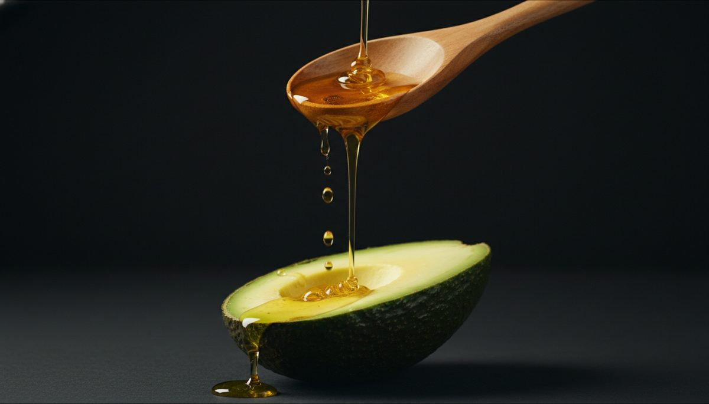

ImprescindibleLo que los doctores no te dicen: por qué NECESITAS aceite de aguacate en tu cocina
El 78% de los colombianos cocina con aceites que se descomponen a altas temperaturas, liberando sustancias tóxicas. Existe una alternativa que no solo es segura, sino que activamente protege tu corazón.
El peligro invisible en tu cocina
Cada vez que calientas aceite de girasol, soya o canola por encima de 180°C, se generan aldehídos y radicales libres. Estos compuestos están directamente relacionados con enfermedades cardiovasculares y procesos inflamatorios crónicos.
El aceite de aguacate Hass tiene un punto de humo de 280°C, el más alto de todos los aceites naturales. Esto significa que puedes freír, saltear y hornear sin que el aceite se degrade. Cada gota que usas es segura.
5 beneficios respaldados por la ciencia
- Reduce el colesterol LDL hasta un 22% — Estudios publicados en el Journal of Clinical Lipidology demuestran que el ácido oleico del aguacate reduce el colesterol malo sin afectar el bueno.
- Absorción de nutrientes x5 — La grasa saludable del aceite de aguacate multiplica por 5 la absorción de carotenoides (vitamina A) de las ensaladas y vegetales.
- Antiinflamatorio natural — Rico en Omega-9, combate la inflamación crónica, la causa silenciosa del 80% de enfermedades modernas.
- Protege tu visión — Alto contenido de luteína, un antioxidante que protege la retina contra la degeneración macular.
- Fortalece el sistema inmune — La vitamina E y los fitosteroles del aceite de aguacate potencian las defensas naturales del cuerpo.
Dato clave: Una sola cucharada de aceite de aguacate Berahass contiene el 25% de tu dosis diaria de vitamina E. Es el aceite con mayor concentración de Omega 3-6-9 del mercado colombiano.
La pregunta no es si puedes permitirte usar aceite de aguacate. La pregunta es: ¿puedes permitirte NO usarlo?